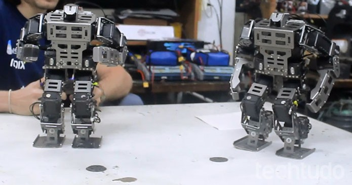
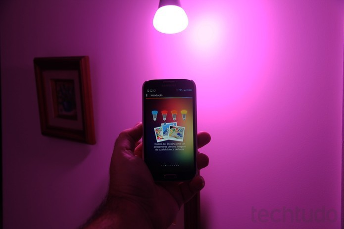

Power bank para notebook funciona como cooler e tem mais de 500 GB de SSD
Postado em 15 de Dezembro 2016
O Line Docks é um acessório compatível com qualquer notebook com porta USB-C que funciona como uma doca completa com portas extras para conectar outros dispositivos, bateria extra e até 1 TB de armazenamento extra via SSD. Power bank super potente carrega celular, notebook e aparelhos médicos O dispositivo já bateu sua meta de arrecadação no Indiegogo e tem data de entrega estimada para junho de 2017. Os interessados poderão comprá-lo por a partir de US$ 149 (cerca de R$ 503, sem contar impostos), com frete para o Brasil por US$ 53 (R$ 179). Power Bank possui SSD embutido e nove portas extras para conectar periféricos Aplicativo do TechTudo: receba as melhores dicas e últimas notícias no seu celular O acessório funciona como uma placa de 0,9 cm de altura na qual o usuário pode apoiar seu notebook. Disponível em versões de 12, 13, 14 e 15 polegadas, para de adaptar ao tamanho de dispositivos diferentes, com peso variando entre 590 e 620g, e bateria com quatro células de 5.000mAh de capacidade. Além de funcionar como bateria extra, o Line Dock possui um leitor de cartões SD, uma porta MiniDisplay, três portas USB 3.0 QuickCharge, duas portas USB-C, uma entrada HDMI e uma MicroB USB3, além de um indicador da quantidade de bateria restante em LED. Para usar o aparelho, o usuário só precisa conectá-lo com seu dispositivo usando um cabo USB-C. E também poderá usar até o armazenamento extra graças a um SSD embutido com capacidade de até 1 TB, dependendo do modelo adquirido, e pode resfriar o notebook, aumentando seu desempenho.
Postado por João Victor SouzaEquipe da PUC-Rio conquista campeonatos mundiais com robôs inteligentes.
Postado em 12 de Dezembro 2016
Filmes se tornam realidade. Agora qualquer um pode ter um robô, seja de brinquedo, para ajudar nas tarefas mais básicas da casa, ou até para desativar bombas e colaborar no trabalho em locais de difícil acesso. Para ampliar essas aplicações e o conhecimento na área, equipes de robótica colocam em prática os cálculos ensinados em sala de aula. Robôs de brasileiros conquistam prêmios e batalhas;conheça cenário Na PUC-Rio, Pontifícia Universidade Católica do Rio de Janeiro, a equipe RioBotz monta e testa diferentes tipos de robôs. Com prêmios em campeonatos mundiais, o grupo trabalha com componentes eletrônicos e mecânicos muitas vezes ainda desconhecidos no Brasil, sendo uma ponte para a inovação na indústria nacional. Um dos itens da vitrine da RioBotz é o robô humanoide.O modelo faz todo tipo de movimento, como se fosse um ser humano. É possível programá-lo para subir escadas, pular, jogar futebol e executar golpes marciais. Caso seja necessária uma aplicação mais específica, basta criar um código no computador e ativá-lo para o que quiser. Segundo o professor Marco Antonio Meggiolaro,coordenador da equipe da PUC-Rio, além de desenvolver tarefas tradicionais de engenharia no manuseio de robôs, os alunos aprendem a montar projetos prontos para o mercado.“No time, os alunos colocam em prática o know how de como desenvolver um equipamento confiável. Eles adquirem experiência com componentes avançados que permitem trazer algumas coisas para empresas que às vezes elas não tinham. O aluno já sai tendo trabalhado e ganhado um campeonato mundial com os equipamentos”, afirma Meggiolaro.
Postado por João Victor SouzaBluetooth 5 já está disponível com melhor alcance e dobro de velocidade.
Postado em 18 de Dezembro 2016
A Bluetooth SIG (Special Interest Group), instituição responsável pela criação, padronização e manutenção do padrão Bluetooth, anunciou nesta quarta-feira (7) o lançamento da quinta versão desta tecnologia, ou seja, o Bluetooth 5.0. O novo padrão já era esperado desde junho, quando o grupo anunciou que já estava prestes a liberar uma atualização. Descubra seis funções pouco conhecidas do Bluetooth Os principais destaques da quinta geração do Bluetooth é que o padrão dobra a velocidade de transferência e quadruplica o alcance do sinal. Além disso, o Bluetooth 5.0 traz uma largura de banda muito maior em relação à versão anterior, 4.2, e que é amplamente usada nos smartphones atuais.
Postado por João Victor Souza